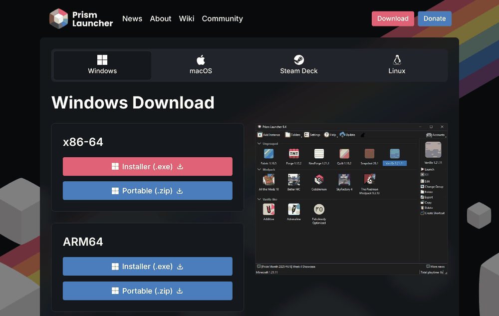
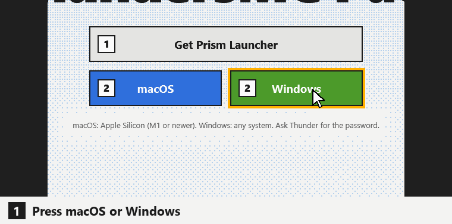

Minecraft 26.3 · Fabric
ThundersMC Pack
macOS: Apple Silicon (M1 or newer). Windows: any system. Ask Thunder for the password.
Four steps
-
1
Get Prism
Install Prism Launcher, open it and sign in with the Microsoft account that owns Minecraft Java Edition: Accounts > Manage Accounts > Add Microsoft.
You don't need to install Java. Prism downloads it; say yes if it asks.

-
2
Download the pack
Press macOS or Windows above and type the password. You get one zip file (about 2 MB). Don't unzip it.

Same on a Mac: press macOS. -
3
Import the pack
In Prism click Add Instance, choose Import on the left, press Browse, pick the zip and click OK. You can also drag the zip onto the Prism window.

Windows shown. Prism looks the same on a Mac. -
4
Play
Select Thunders-MC-Pack-26.3 (Windows) or Thunders-MC-Pack-26.3-Mac (Mac) and press Launch. The first time, a progress bar downloads about 200 MB of mods. Let it finish. Then open Multiplayer: Thunder's Server is already in the list.
Thunder has to whitelist your Minecraft username before you can join.

Windows shown. On a Mac it is the same.
Shaders
-
Which shader?
It depends on your computer. On Windows you pick between MakeUp Ultra Fast and Photon. Photon is the recommended one. On macOS you pick between Metal Shaders and no shaders.
Fastmore FPS, for laptops and older PCs Fancythe best look, needs a good graphics card Windows MakeUp Ultra Fast Photon Recommended macOS No shaders Metal Shaders Everyone sees the same clouds and weather on the server, whichever one you pick.